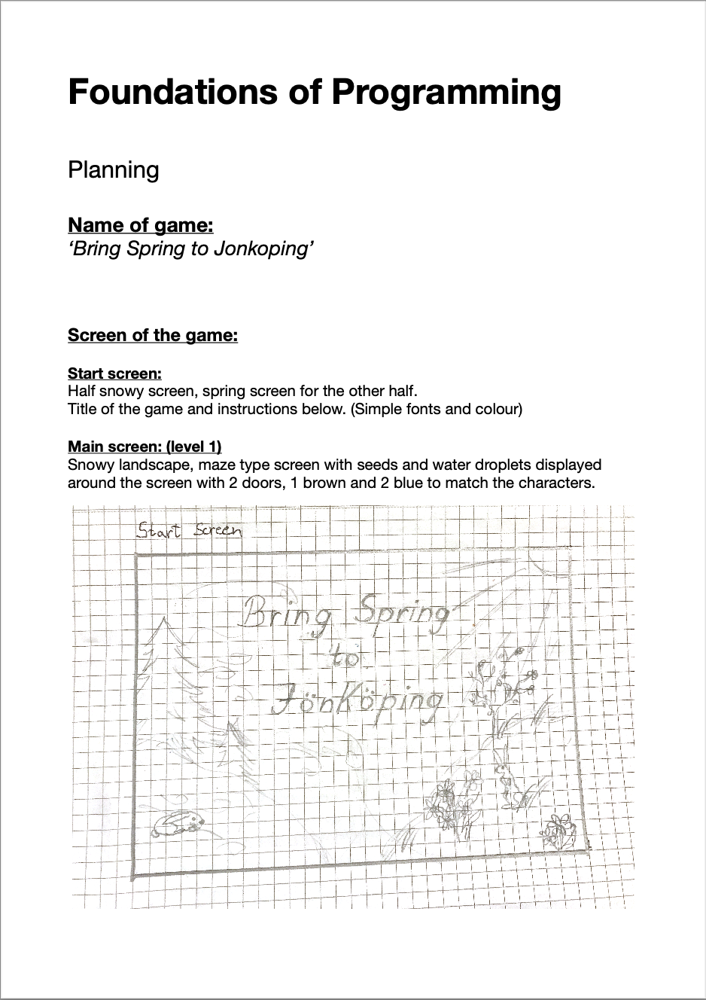
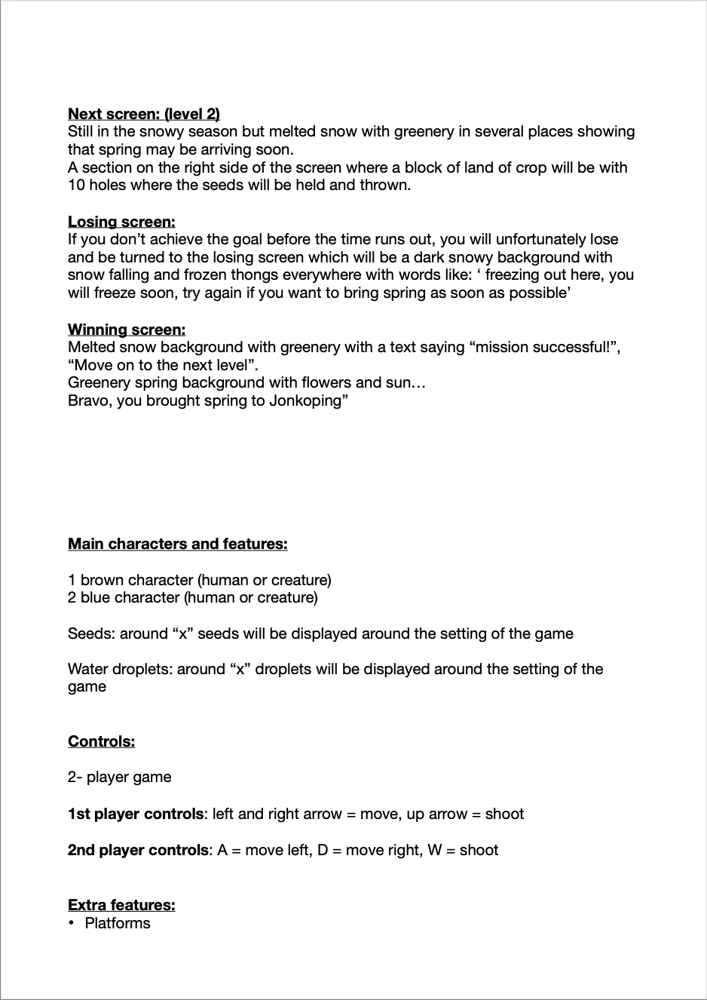
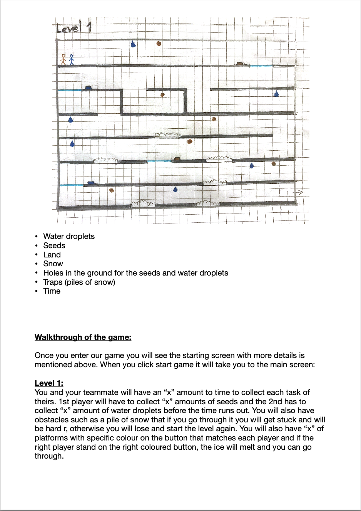

Game Project - Bring Spring to Jönköping
(multyplayer, js)
Find a friend to cooperate and click on the image to play!
We had to make a document about planning the game:



We also had to make a short trailer for the game. We were paying attention to reflect the adventorous, playful vibe of the game. Since our story was to create spring, we shooted our trailer in two rounds. First, in the winter when it was snowing, and second already in spring when flowers were blooming.
Take a look at it: